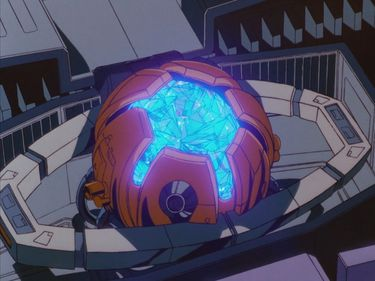
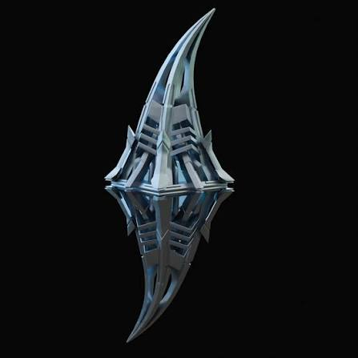

ARCHIVE #004
MATRICE DE COMMANDEMENT
ARTEFACT
MATRICE DE COMMANDEMENT SUR OPTIMUS PRIME (FILM DE 1986)

MATRICE DE COMMANDEMENT DANS TRANSFORMERS ROTF (2009)
IDENTITÉ
NATURE
La Matrice de Commandement est généralement présenté comme l'artefact principal de la licence Transformers. Contenant une part de l'essence même de Primus, (dieu créateur des Transformers), et la sagesse des porteurs précédent. Elle est une source d'énergie presque infinie et possède des pouvoirs immenses:
Sagesse des Anciens (La Lignée): Elle agit comme une bibliothèque spirituelle. Le porteur peut communiquer avec l'esprit de tous les Primes décédés pour recevoir des conseils tactiques ou philosophiques
Énergie Pure de Primus: Elle abrite une fraction de la force vitale du dieu créateur des Transformers. Cette énergie peut détruire les forces du chaos, notamment Unicron, le destructeur de mondes.
Don de Vie (Protoformes): À l'instar de l'AllSpark, la Matrice a le pouvoir d'insuffler la vie (une étincelle ou Spark) à de nouveaux Transformers ou de soigner des blessures mortelles.
Évolution Physique: Lorsqu'elle accepte pleinement un porteur, elle modifie son corps pour le rendre plus grand, plus fort et plus résistant (c'est ainsi que Hot Rod est devenu le massif Rodimus Prime).
Purification Cosmique: Elle peut émettre une onde d'énergie capable de guérir des épidémies d'origine techno-organique. Sa nature et son histoire sont presque toujours les mêmes dans les différentes continuités.
PORTEURS
Porteur le plus emblématique, choisi pour sa noblesse, sa compassion et son courage
Le véritable successeur désigné par la Matrice. C'est en l'ouvrant qu'il bat Unicron et passe de jeune guerrier à leader des Autobots.
Il la reçoit temporairement à la mort d'Optimus dans le film de 1986, mais ne parvient pas à ouvrir son plein potentiel car il n'est pas "l'élu".
APPARITIONS
Première apparition dans la génération G1 (série et comics Marvel).
The Transformers: The Movie
Transformers: Animutant / Beast Wars
Transformers: Trilogie d'Unicron (Armada, Energon et Cybertron)
Comics IDW
Transformers: Revenge of the Fallen
Transformers:Prime
Transformers: Trilogie de Cybertron (Siege, Earthrise et Kingdom)
Transformers: EarthSpark
Comics Skybound
Transformers: One, la Matrice de Commandement est donnée à Orion Pax qui devient Optimus Prime
MULTIVERS
Version originale de la franchise.
Plusieurs versions dans les différentes continuités IDW.
Version des films live-action.
Version alternative où les rôles des factions sont inversés.